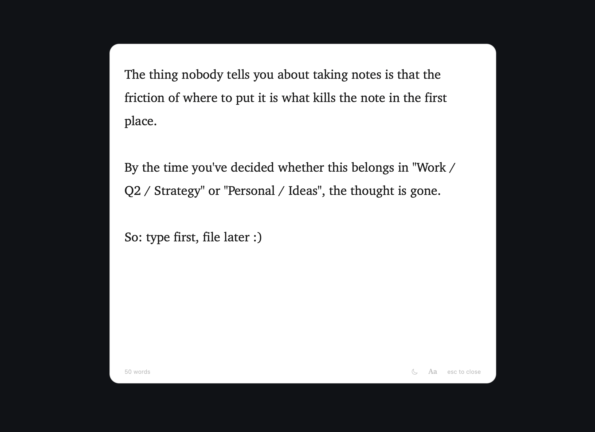

A clean page, one keystroke away.
Wisp is a macOS scratchpad. Press ⌥Space anywhere and a glass panel slides in. Type. Hit Esc. It's gone — but your text stays, as plain markdown on disk.
Requires macOS 13 (Ventura) or later, on Apple silicon or Intel. Free and open source.
Everything you need.
Nothing you don't.
One keystroke
⌥Space anywhere on macOS summons the panel. Rebindable to any combo. Esc dismisses and returns focus to where you were.
Plain markdown
Your text lives at ~/Library/Application Support/Wisp/scratchpad.md.
Open it in any editor. Pipe it through anything. It's just a file.
Sync across Macs
Point Wisp at any folder — iCloud Drive, Dropbox, Syncthing — and your scratchpad follows you to every Mac you own. macOS handles the sync.
Smart editing
Lists auto-continue. --- becomes a full-width divider.
**bold** renders inline. Headings get a jump-bar at the top.
:rocket: becomes 🚀.
Light, dark, system
Six preinstalled serifs and sans. Three text sizes. Theme follows your OS by default, or pin it to light or dark.
Quiet at login
Launch at Login starts Wisp silently in the menu bar — ready for ⌥Space the moment you need it. In-app auto-update handles new versions.

Install in one line.
Homebrew
brew tap sulemaanhamza/wisp
brew install --cask wispHomebrew tells macOS the app is safe to open for you.
Direct download
Grab the latest zip from
Releases,
unzip, drag Wisp.app to /Applications, then:
xattr -d com.apple.quarantine /Applications/Wisp.app
The xattr line tells macOS the app is safe to open
(Wisp is unsigned — no Apple Developer ID). Or skip Terminal:
open Wisp once, then System Settings → Privacy & Security → Open Anyway.
Free. Forever.
Try it now.
The download is under 5 MB. You'll know within thirty seconds if Wisp is for you.
Download for macOSmacOS 13 Ventura+, Apple silicon and Intel